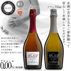

【あすつく】【最高級ノンアルコール・スパークリング飲料】【1688 Grand】ロゼ/ブラン＜２種類＞（750ml）化粧箱付き！
【1688 Grand Rose/1688グラン・ロゼ】----- ■原産国：フランス ■内容量：ロゼ 1本 750ml ■アルコール度数：0.00% （無発酵） ■主な原材料：天然葡萄果汁、炭酸、クエン酸 ■賞味期限：3年間 ■賞味適温 ：5℃ ■保存場所 ：高温多湿を避けた冷暗所 ■化粧箱サイズ：10x10x33cm ■認証：HALAL/ハラルNo.MAI7362.7669.150006.FR ■受賞：2012年フランス農業工業食品開発機構 健康食品部門 グランプリ受賞 【1688 Grand Blanc/1688グラン・ブラン】----- ■原産国：フランス ■内容量：ブラン 1本 750ml ■アルコール度数：0.00% （無発酵） ■主な原材料：天然葡萄果汁、炭酸、クエン酸 ■賞味期限：3年間 ■賞味適温 ：5℃ ■保存場所 ：高温多湿を避けた冷暗所 ■化粧箱サイズ：10x10x33cm ■認証：HALAL/ハラルNo.MAI7362.7669.150006.FR